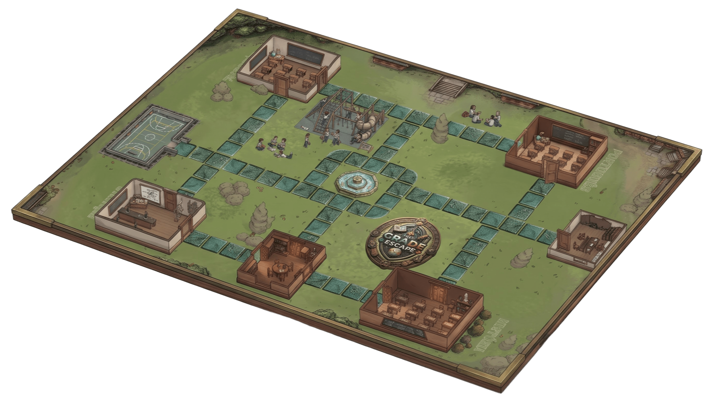
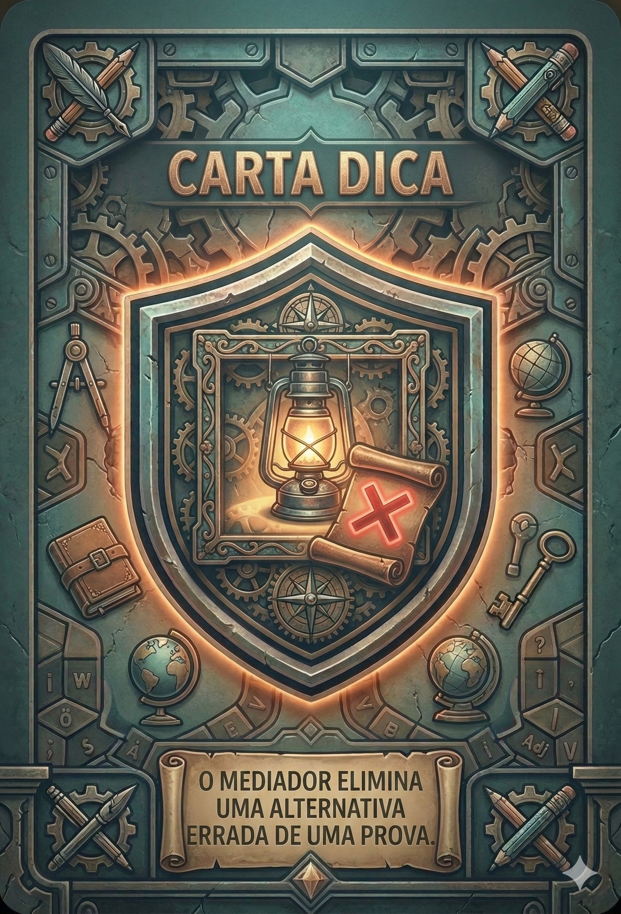
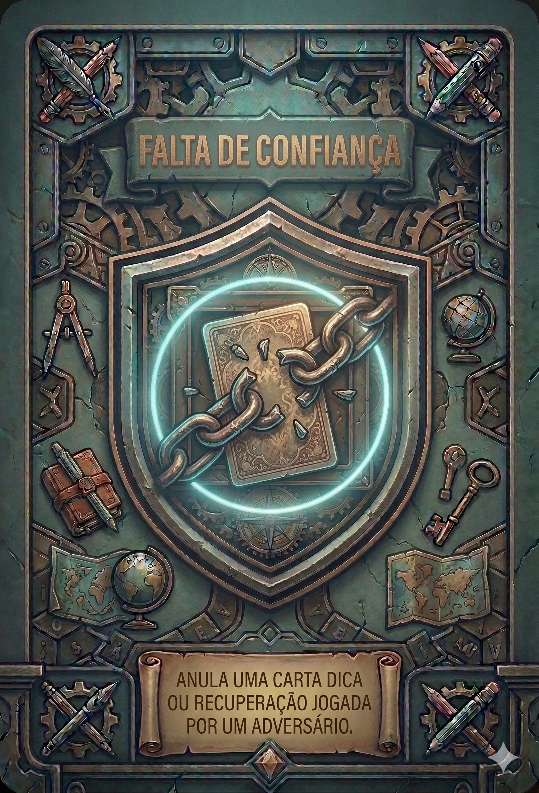
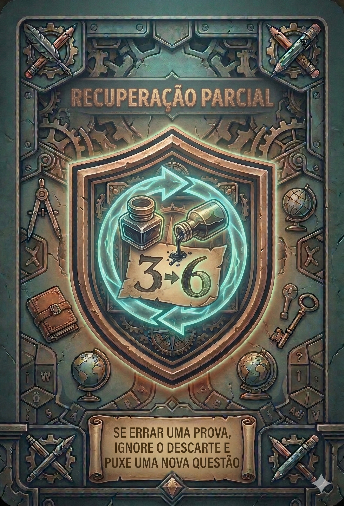
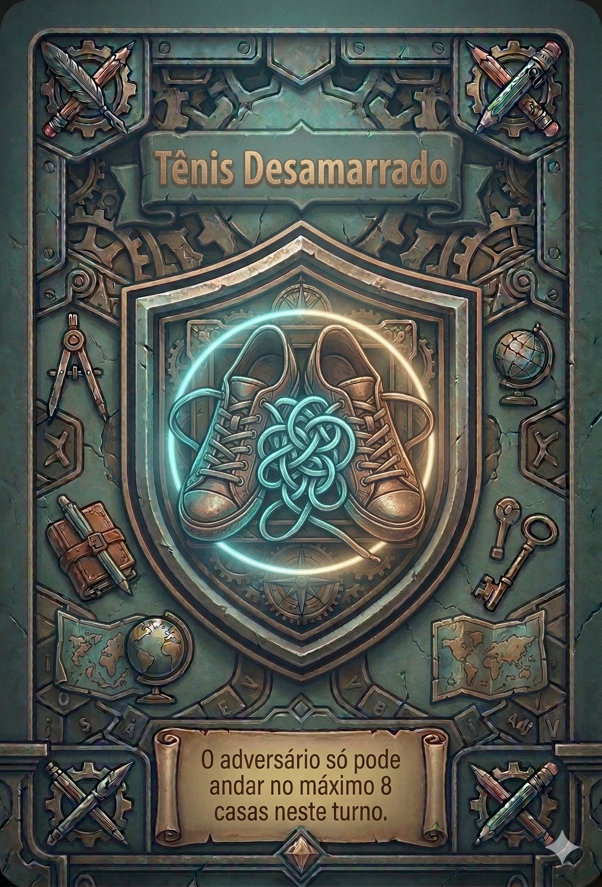
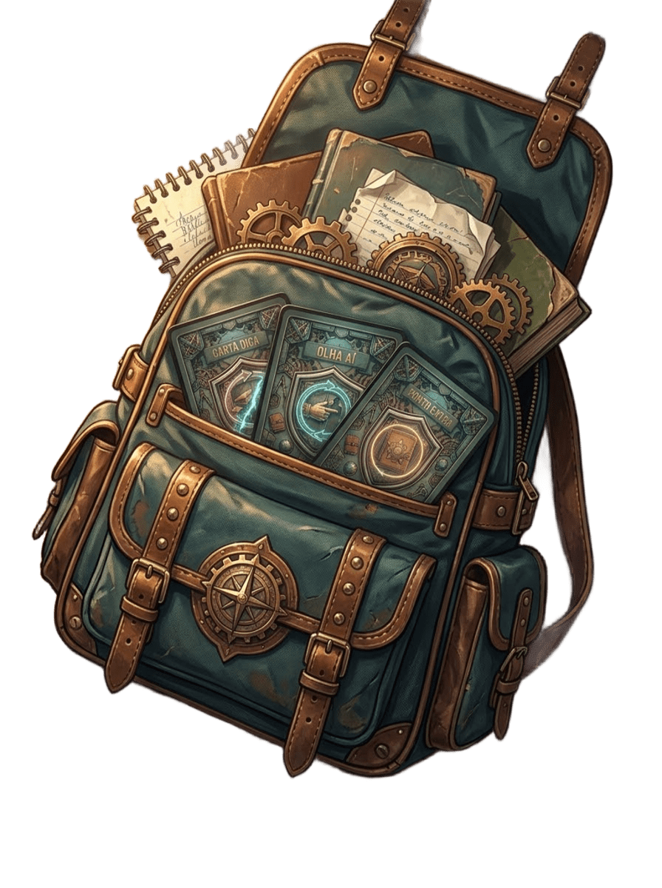

Embarque nessa jornada estratégica e educativa! Domine os conteúdos, supere os desafios e garanta sua fuga com a melhor pontuação no boletim.
Garanta a sua edição do jogo completo!
The Grade Escape é um jogo de tabuleiro tático e educativo ambientado no ambiente escolar. Os jogadores assumem o papel de alunos navegando pelos corredores, salas de aula e quadras, enfrentando provas, eventos inesperados e estratégias dos adversários.
Seu objetivo é gerenciar seus recursos, responder a questões de diversas disciplinas, utilizar cartas de ação estratégicas e garantir a pontuação necessária para escapar com o melhor boletim da turma!
Une revisão de conteúdos escolares com mecânicas táticas de movimentação e gerenciamento de cartas.
Um tabuleiro rico em detalhes representando o campus escolar completo, com salas temáticas para cada matéria.
Use cartas para virar o jogo, obter dicas, recuperar notas ou criar obstáculos para seus oponentes.
Um aplicativo web exclusivo sincronizado com o jogo físico para sorteio de perguntas e controle de tempo.
Entenda a dinâmica das rodadas, o funcionamento do aplicativo e as principais mecânicas para conquistar a vitória.
O objetivo é percorrer o campus escolar, ser aprovado nas matérias obrigatórias e alcançar o portão de saída com o boletim completo. Vence o jogador que escapar primeiro com todas as aprovações ou aquele que acumular o melhor desempenho ao final da partida.
No seu turno, o jogador rola os dados para avançar pelas casas do mapa. Pelo caminho, é possível escolher rotas estratégicas nos corredores, cortar caminho por áreas externas como o pátio e a quadra, ou usar cartas de ação para aumentar a movimentação.
Ao entrar em uma sala temática (Matemática, Português, Ciências ou História), o aplicativo sorteia uma questão da disciplina.
As cartas são o grande diferencial tático. Podem ser jogadas para obter vantagens próprias (como ignorar um descarte, obter dicas e anular erros) ou para atrapalhar os adversários, bloqueando caminhos ou forçando testes de surpresa.
O mapa conta com a presença de NPCs ativos. Cair em casas de evento ou cruzar com inspetores pode render advertências, perda de turnos, passe livre por corredores trancados ou convocações diretas para a diretoria.
Quando acionado no aplicativo ou via casa especial do tabuleiro, dois alunos entram em um duelo direto de conhecimento contra o tempo. O vencedor do desafio conquista o direito de roubar ou ganhar cartas decisivas da mão do oponente.